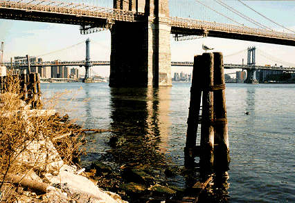

"Like Cain I now behold this chain of events that I must break"
-- Bob Dylan
Feel the water, and let it sink into you. Water is life, and to survive in the city you sometimes must go to the water and watch it march past, each wave like a tiny invisible soldier. A river is a parade of molecules, rising and falling in waves, each wave lapping and laughing and dancing, rocking to catch glimpses of the light.
In New York City, there are always people standing by the water, staring at it. This is what Herman Melville wrote about in the first pages of Moby Dick, a book I finally read after putting it off for a long time.
Moby Dick is not often thought of a book about New York City, because it so vividly describes life on a whaling ship and in the harbor towns of Massachusetts. But Herman Melville was born in New York City, and the first chapter of Moby Dick presents Ishmael (the character Herman Melville based on himself) standing at the Battery, the southern tip of Manhattan Island, and pondering what to do with his life. He is a young writer in search of truth and experience, but he has seen enough of New York City and knows there is no reason for him to stay any longer. Where will he go? He stands at the edge of the island, and notices how many other people are standing nearby doing the same thing he is. He describes this scene:
Circumambulate the city of a dreamy Sabbath afternoon. Go from Corlears Hook to Coenties Slip, and from thence, by Whitehall northward. What do you see? -- Posted like silent sentinels all around the town, stand thousands upon thousands of mortal men fixed in ocean reveries. Some leaning against the spiles; some seated upon the pier-heads; some looking over the bulwarks of ships from China; some high aloft in the rigging, as if striving to get a still better seaward peep.All along the shoreline of Manhattan Island's southern tip, people are staring at the water. This vision inspires Ishmael to go to the sea, and perhaps Herman Melville himself was inspired by a vision like this when as a young man he went to sea on the whaling voyage that eventually gave him the raw material for his greatest book.
I never went to sea myself (maybe I should have), but the first time I read these words I was surprised, because I often spend my lunch hours doing the exact thing Ishmael describes. Battery Park is only a few blocks south of Wall Street, and while my co-workers usually go to the cafeteria for roast beef sandwiches and soda, I like to slip off for long lunches, buy a knish or a burrito or a hot dog or a slice of pizza, take it with me to the tip of the island, and sit there eating and staring at the water.
Sometimes I sit there with a stunned look on my face, as motionless as a male mannequin, contemplating the vast horrific frustrations of life on Wall Street. Other times (like on Fridays, especially before holidays) I am strangely calm, temporarilily peaceful like Buddha. The wind on my face, the sounds of the gulls, the eternal waves rippling under my feet ...
Herman Melville and I stand there, fixed in our ocean reveries.
There are others around us. Men and women, old and young, rich and poor, happy and sad, the brilliant and the insane. Bartleby the Scrivener might have even walked here once (like me, I imagine, he took long lunches). We each stand alone, lost in our thoughts, staring at the waters of the New York Bay.
Across the way is Brooklyn, and I think of my ancestors who came to Brooklyn from Eastern Europe over a hundred years ago. Why did they come to Brooklyn, a place they'd never heard of? Because Brooklyn welcomed them, and no other place did. They sprouted where they landed, like dandelion seeds. Their lives do not seem glamorous to me, but they did things I envied. My father used to watch the Brooklyn Dodgers play at Ebbets Field, for instance. And my grandfather, a son of immigrants, told me that as a young man he used to go to the vaudeville theatres of Manhattan with his friends, and that they'd seen the Marx Brothers on stage more times than he could remember. It was the jazz age, and my ancestors hardly belonged in Manhattan at all, with their accents, smelling of chicken soup, hands grimy from factory grease.
And yet they did belong. Today the immigrants are in Queens; they crowd around the Globe in Flushing Meadows Park and play happily with their children. America belonged to my grandfather, and now it belongs to the immigrants of Queens. The Colombians and Dominicans from Corona and Jackson Heights, the Koreans and Chinese and Afghanis from Flushing, the Indians and Pakistanis of Forest Hills and Elmhurst and Jackson Heights ... they come to New York to be part of America, and America is grateful to them for coming.
But life in New York is not easy. We have hard times, and when things get really bad, worse then they've ever been before, we come to the tip of Manhattan Island, and we stare at the water.
These are my loomings. I think I'm rambling here -- but hey, if you've gotten all the way to the end of this album you must like my stuff. I'm going to go now, but thanks for reading this! Send me email if you want. I have two pieces of advice, in case you want them: always believe in God (whatever the fuck that means); and, if you have a job, don't let your job kill your free spirit, the way it does to so many people I know.
There are more things, many more things, that I want to say about New York City. But it's late at night and I'm tired. I started this thing in February; now it's May and I can't remember a thing that happened in between.
So, I think it's time for me to say goodnight. Peace and Love y'all! This record is over.
Queensboro Ballads
by
Levi Asher